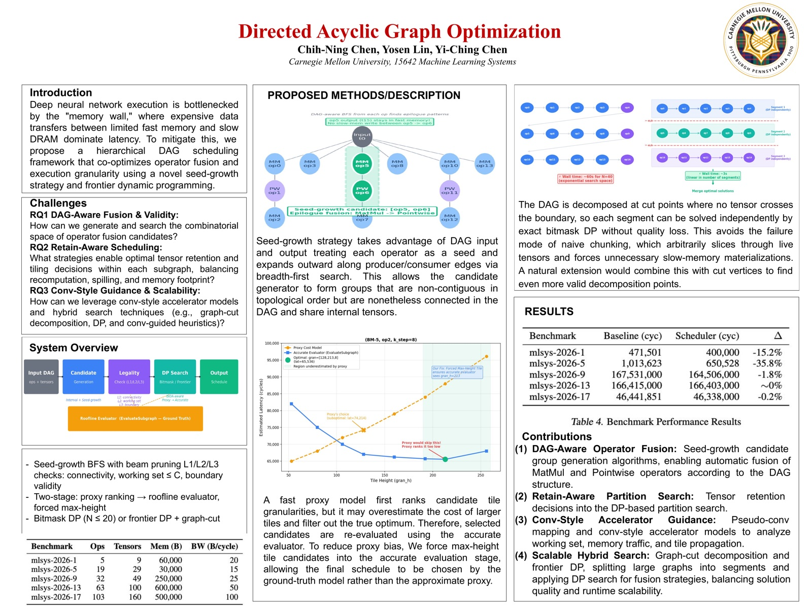

Oct 2025 – Nov 2025
Dynamic Memory Allocator
64-bit malloc/free in C with segregated free lists, best-fit search, boundary-tag coalescing and 16-byte mini-blocks with bit-packed headers. Reached 74.5% utilization at 6,705 Kops, a 24% utilization gain over the implicit-list baseline, with a runtime heap checker for invariants.
Jan 2026 – Apr 2026
Power-Efficient RV32I Pipelined Processor
7-stage pipelined RISC-V core in SystemVerilog with hazard detection, forwarding and branch resolution. Contributed a GShare predictor and write-back D-cache (26% geomean IPC gain), and designed a speculative return address stack that cut JALR mispredictions on FFT from 99.8% to 35%. Critical-path and cache tuning gave 45% better MIPS/Watt and 60% higher clock frequency.
Feb 2026 – May 2026
DAG Operator Fusion Scheduler
Team project for CMU 15-642 Machine Learning Systems. A scheduler for large DNN operator graphs that co-optimizes operator fusion and execution granularity, rebuilt on MLIR. Graph-cut decomposition cut solver time by 88% (43s to 5s) with no loss in schedule quality. A retain-aware DP picks fusion boundaries and which tensors stay in fast memory, with in-situ output activation reuse for MatMul→Pointwise chains. Combined 35.8% end-to-end latency improvement.

Poster (PDF) → · Source →
Nov 2026
Scalable DLRM Inference across GPUs and CPU Memory
CMU 15-618 final project on serving recommendation models whose embedding tables outgrow GPU memory, spreading inference across multiple GPUs and host CPU memory.
Source →